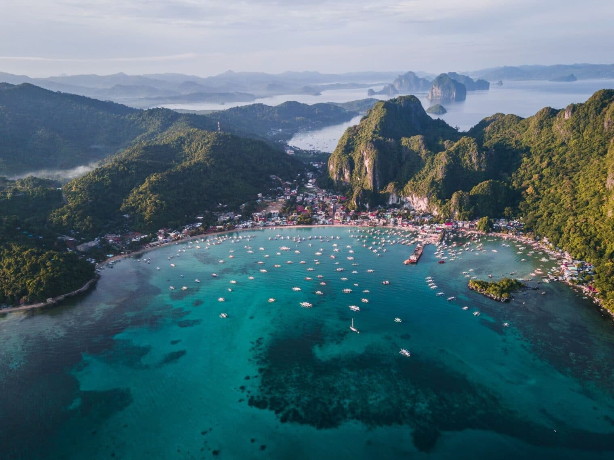
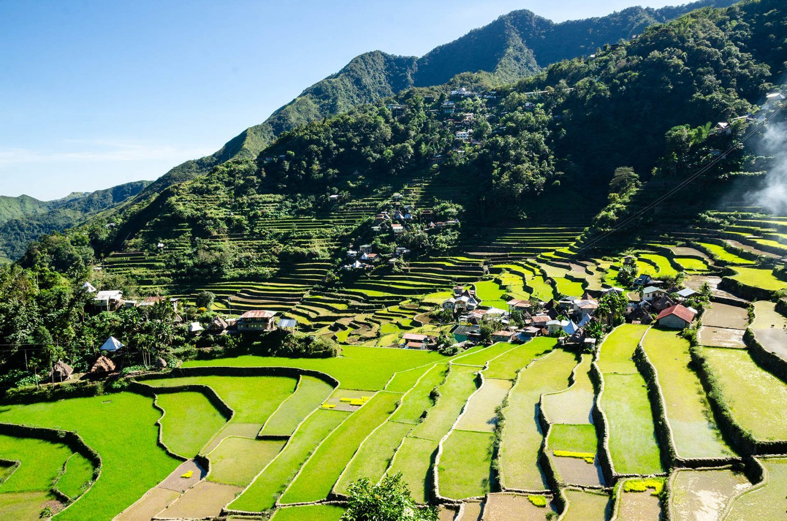
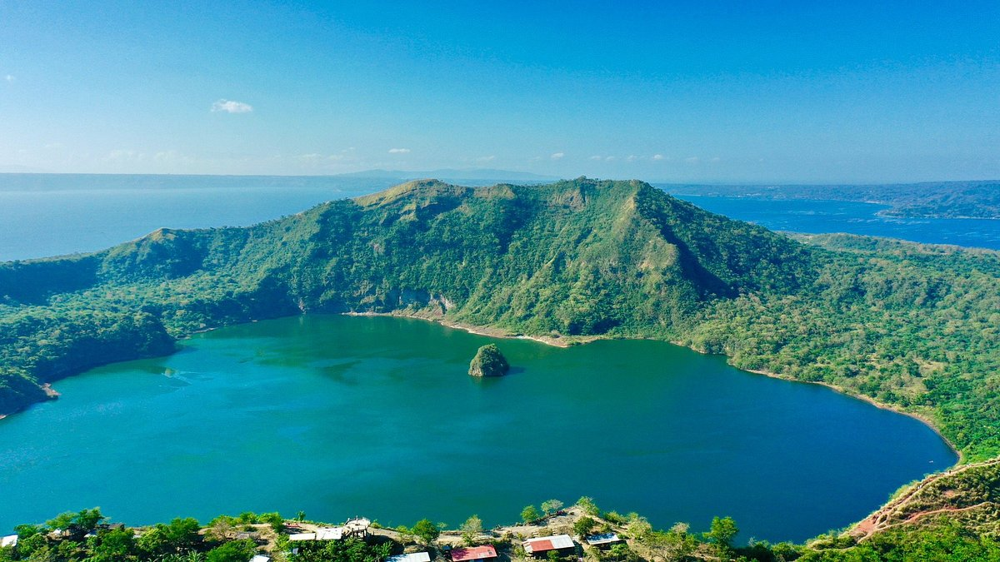
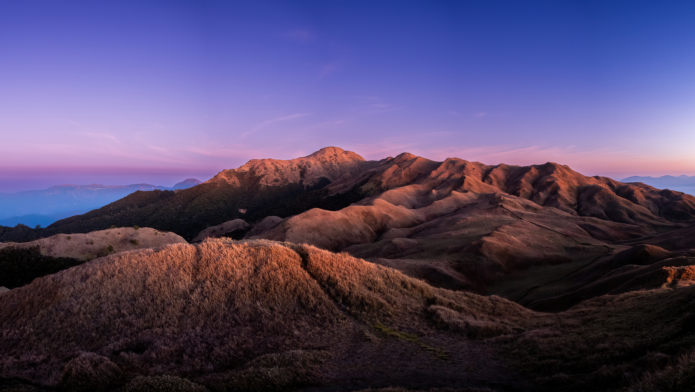
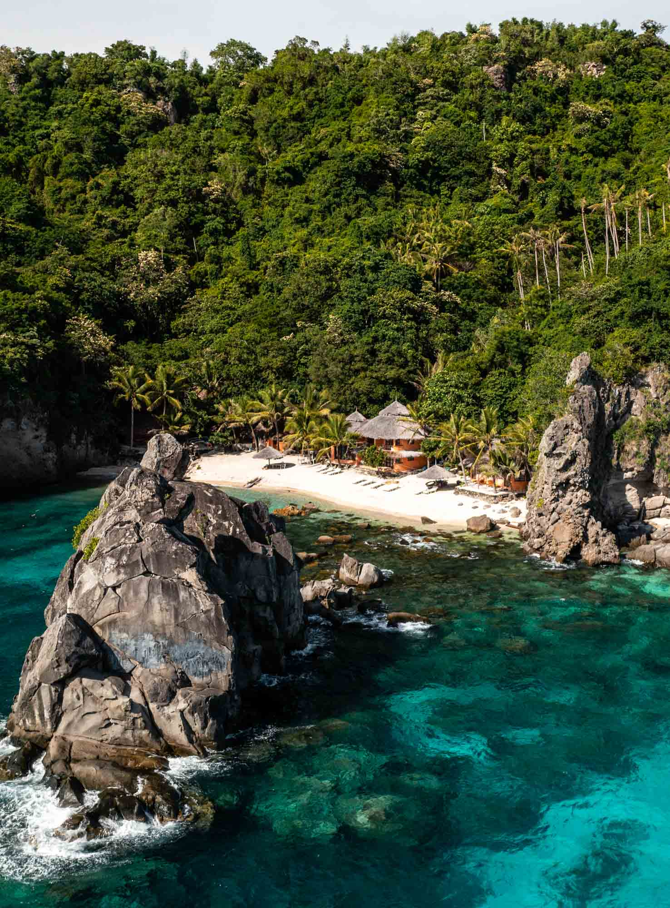

El Nido, Palawan
El Nido is a popular destination in Palawan known for its dramatic limestone cliffs, hidden lagoons, beautiful beaches, and clear turquoise waters. It is also a popular location for island hopping and snorkeling.
Discover five breathtaking destinations worth visiting.
The Philippines is home to many beautiful natural attractions. From majestic mountains to clear blue waters, here are five destinations worth visiting.

El Nido is a popular destination in Palawan known for its dramatic limestone cliffs, hidden lagoons, beautiful beaches, and clear turquoise waters. It is also a popular location for island hopping and snorkeling.

The Banaue Rice Terraces are an ancient agricultural landmark located in Ifugao. The terraces were carved into the mountains by the Ifugao people and are known for their impressive size and beautiful scenery.

Taal Volcano is one of the Philippines' well-known volcanic landmarks. Located in Batangas, it sits within Taal Lake and provides a unique landscape that attracts visitors and photographers.

Mount Pulag is one of the highest mountains in the Philippines. It is famous for its scenic hiking trails, cool climate, sunrise views, and spectacular sea of clouds seen from its summit.

Apo Island is a small island in Negros Oriental known for its marine sanctuary and diverse underwater ecosystem. Visitors can enjoy snorkeling, diving, and seeing colorful coral reefs and marine animals.
Search for any destination on the map below.
youremail@example.com
+63 900 000 0000
Your address, Philippines
Get new travel spots and tips in your inbox.